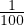
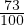

Üks protsent on sajandik tervikust ja seda tähistatakse 1%. Tervikut tähistatakse
100%.
1% =  = 0,01osa tervikust.
25% tähistab neljandikku täisosast, 50% poolt täisosast ja 75% kolme neljandikku
täisosast.
Arvust protsendi leidmiseks tuleb arv antud protsendile vastava osaga läbi
korrutada.
Näiteks 73% leidmiseks arvust 8 tuleb arv 8 läbi korrutada arvuga  = 0,73.
Seega 73% kaheksast on 0,73 ⋅ 8 = 5,84.